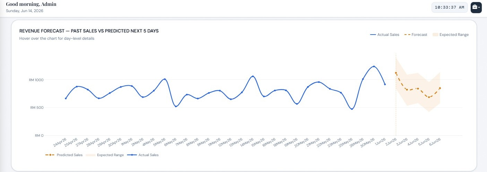
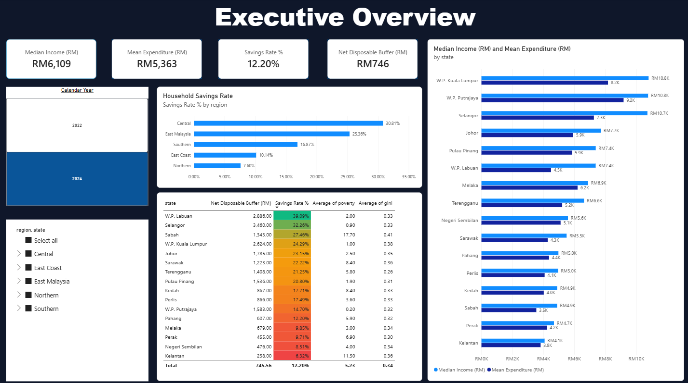
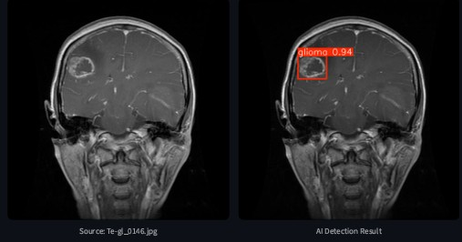
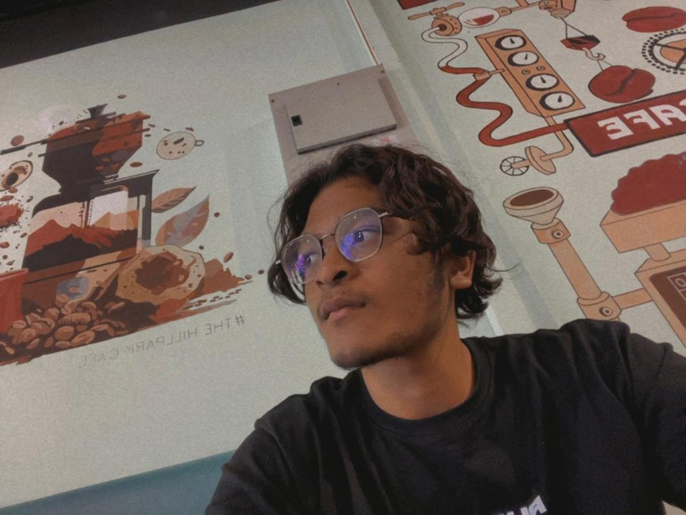

01 — Forecasting & Decision Support
AI-Powered Sales Forecasting
Built a CSV-driven system with five-day sales forecasts, weather-aware analysis and ingredient planning for multiple outlets.
PythonFlaskFacebook ProphetSQLite
I enjoy turning raw data into meaningful insights, building predictive models, and developing practical technology solutions.
Three projects exploring forecasting, data analysis and applied machine learning. Select a project for a closer look at the approach and outcomes.

Built a CSV-driven system with five-day sales forecasts, weather-aware analysis and ingredient planning for multiple outlets.

An interactive analysis of Malaysian household income and everyday living costs across 16 states, showing how rising prices impact family savings and purchasing power.

Trained a YOLOv8 model to detect three tumor types in Kaggle MRI scans, achieving 92.10% mAP50 in academic testing.
I'm Kamaputra Kamaruddin, a final-year Bachelor of Computer Science (Hons.) student at Universiti Selangor (UNISEL).
I'm passionate about data analytics and data science, particularly turning raw data into meaningful insights and exploring machine learning to solve practical problems.
I also enjoy backend development and am eager to keep learning, strengthen my technical skills, and contribute to innovative software solutions.

Core technologies I used
A brief look at my academic background and accomplishments.
Universiti Selangor (UNISEL) · Ongoing
Universiti Selangor (UNISEL) · 2021–2024
· Bachelor's: 4 semesters
· Diploma: 3 semesters
University Level · 2025
Selangor Digital School & AI Nusantara
I'm open to opportunities in data analytics, data science and related technology roles. Feel free to reach out or explore my work.